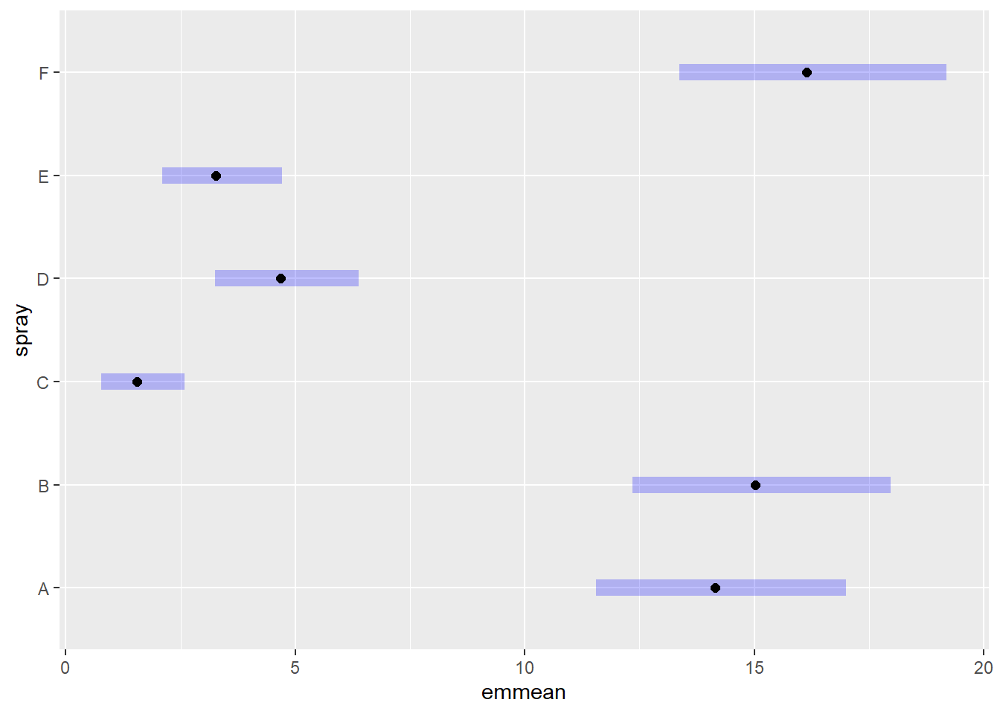

install.packages("agricolae")
install.packages("lme4")
install.packages("performance")
install.packages("report")Testes Não Paramétricos
Quando os dados não seguem uma distribuição normal, ou quando não podemos assumir variâncias homogêneas entre os grupos, é necessário recorrer a testes não paramétricos. Esses testes não dependem de pressupostos fortes sobre a distribuição dos dados, o que os torna uma escolha ideal para situações em que as condições para análises paramétricas, como a ANOVA, não são atendidas.
Pacotes que ainda não foram usados neste site e precisam ser instalados
os dados não são normais, o que eu faço?
Primeiro, precisamos verificar se os dados seguem uma distribuição normal. Se não, podemos usar transformações ou recorrer a testes não paramétricos. Vamos ver como verificar a normalidade e como proceder:
# Carregando os dados do pacote InsectSprays
library(agricolae)
library(ggplot2)
insetos <- InsectSprays
View(insetos)
# Visualizando os dados com um gráfico de boxplot e jitter
insetos |>
ggplot(aes(spray, count)) +
geom_boxplot(outlier.color = NA) + # Removendo outliers no boxplot
geom_jitter(width = 0.1) # Adicionando dispersão nos pontos# Ajustando um modelo linear para verificar o efeito do tipo de spray no número de insetos mortos
m2 <- lm(count ~ spray, data = insetos)
# Verificando os resíduos do modelo
hist(residuals(m2)) # Histograma dos resíduos
shapiro.test(residuals(m2)) # Teste de normalidade de Shapiro-Wilk
Shapiro-Wilk normality test
data: residuals(m2)
W = 0.96006, p-value = 0.02226# Teste de Bartlett para verificar se as variâncias são homogêneas
bartlett.test(count ~ spray, data = insetos)
Bartlett test of homogeneity of variances
data: count by spray
Bartlett's K-squared = 25.96, df = 5, p-value = 9.085e-05# Verificando visualmente se os resíduos seguem uma distribuição normal
qqnorm(residuals(m2)) # Q-Q plot para os resíduos
qqline(residuals(m2)) # Linha de referência no Q-Q plot
Se os dados não atenderem aos pressupostos de normalidade ou homocedasticidade, podemos aplicar transformações nos dados ou usar testes não paramétricos.
Alternativa 1 - Transformação dos Dados
Uma opção para lidar com dados não normais é transformar os dados. Uma transformação comum é a raiz quadrada, que pode ajudar a normalizar a distribuição dos dados.
library(report)
library(emmeans)
library(multcomp)
# Aplicando transformação de raiz quadrada nos dados
m3 <- lm(sqrt(count) ~ spray, data = insetos)
# Teste de normalidade nos resíduos após transformação
shapiro.test(residuals(m3))
Shapiro-Wilk normality test
data: residuals(m3)
W = 0.98721, p-value = 0.6814hist(residuals(m3)) # Visualização da distribuição dos resíduos
qqnorm(residuals(m3)) # Q-Q plot dos resíduos
qqline(residuals(m3)) # Linha de referência no Q-Q plot
# Teste de Bartlett para homogeneidade de variâncias após transformação
bartlett.test(sqrt(count) ~ spray, data = insetos)
Bartlett test of homogeneity of variances
data: sqrt(count) by spray
Bartlett's K-squared = 3.7525, df = 5, p-value = 0.5856# Realizando ANOVA no modelo transformado
anova(m3)Analysis of Variance Table
Response: sqrt(count)
Df Sum Sq Mean Sq F value Pr(>F)
spray 5 88.438 17.6876 44.799 < 2.2e-16 ***
Residuals 66 26.058 0.3948
---
Signif. codes: 0 '***' 0.001 '**' 0.01 '*' 0.05 '.' 0.1 ' ' 1# Relatório do modelo ajustado
report(m3)We fitted a linear model (estimated using OLS) to predict count with spray
(formula: sqrt(count) ~ spray). The model explains a statistically significant
and substantial proportion of variance (R2 = 0.77, F(5, 66) = 44.80, p < .001,
adj. R2 = 0.76). The model's intercept, corresponding to spray = A, is at 3.76
(95% CI [3.40, 4.12], t(66) = 20.73, p < .001). Within this model:
- The effect of spray [B] is statistically non-significant and positive (beta =
0.12, 95% CI [-0.40, 0.63], t(66) = 0.45, p = 0.653; Std. beta = 0.04, 95% CI
[-0.15, 0.23])
- The effect of spray [C] is statistically significant and negative (beta =
-2.52, 95% CI [-3.03, -2.00], t(66) = -9.81, p < .001; Std. beta = -0.94, 95%
CI [-1.13, -0.75])
- The effect of spray [D] is statistically significant and negative (beta =
-1.60, 95% CI [-2.11, -1.08], t(66) = -6.22, p < .001; Std. beta = -0.59, 95%
CI [-0.79, -0.40])
- The effect of spray [E] is statistically significant and negative (beta =
-1.95, 95% CI [-2.46, -1.44], t(66) = -7.61, p < .001; Std. beta = -0.73, 95%
CI [-0.92, -0.54])
- The effect of spray [F] is statistically non-significant and positive (beta =
0.26, 95% CI [-0.25, 0.77], t(66) = 1.01, p = 0.318; Std. beta = 0.10, 95% CI
[-0.09, 0.29])
Standardized parameters were obtained by fitting the model on a standardized
version of the dataset. 95% Confidence Intervals (CIs) and p-values were
computed using a Wald t-distribution approximation.# Estimando médias ajustadas e destransformando os resultados
m33 <- emmeans(m3, ~ spray, type = "response") # Desfazendo a transformação
plot(m33)
cld(m33) # Comparações de médias ajustadas entre os grupos spray response SE df lower.CL upper.CL .group
C 1.55 0.452 66 0.779 2.58 1
E 3.27 0.656 66 2.095 4.72 12
D 4.68 0.785 66 3.248 6.38 2
A 14.14 1.360 66 11.550 17.00 3
B 15.03 1.410 66 12.352 17.97 3
F 16.15 1.460 66 13.370 19.19 3
Confidence level used: 0.95
Intervals are back-transformed from the sqrt scale
Note: contrasts are still on the sqrt scale. Consider using
regrid() if you want contrasts of back-transformed estimates.
P value adjustment: tukey method for comparing a family of 6 estimates
significance level used: alpha = 0.05
NOTE: If two or more means share the same grouping symbol,
then we cannot show them to be different.
But we also did not show them to be the same. Alternativa 2 - Testes Não Paramétricos
Quando os dados não podem ser transformados para normalizar sua distribuição, a solução é recorrer a testes não paramétricos. Um dos testes mais comuns para comparação de medianas entre dois ou mais grupos é o Teste de Kruskal-Wallis.
# Teste de Kruskal-Wallis para comparar os grupos
kruskal.test(count ~ spray, data = insetos)
Kruskal-Wallis rank sum test
data: count by spray
Kruskal-Wallis chi-squared = 54.691, df = 5, p-value = 1.511e-10# Utilizando o pacote agricolae para comparações pós-hoc entre os grupos
library(agricolae)
kruskal(insetos$count, insetos$spray, group = TRUE, console = TRUE)
Study: insetos$count ~ insetos$spray
Kruskal-Wallis test's
Ties or no Ties
Critical Value: 54.69134
Degrees of freedom: 5
Pvalue Chisq : 1.510845e-10
insetos$spray, means of the ranks
insetos.count r
A 52.16667 12
B 54.83333 12
C 11.45833 12
D 25.58333 12
E 19.33333 12
F 55.62500 12
Post Hoc Analysis
t-Student: 1.996564
Alpha : 0.05
Minimum Significant Difference: 8.462804
Treatments with the same letter are not significantly different.
insetos$count groups
F 55.62500 a
B 54.83333 a
A 52.16667 a
D 25.58333 b
E 19.33333 bc
C 11.45833 cO teste de Kruskal-Wallis é o equivalente não paramétrico da ANOVA e é utilizado quando os dados são ordinais ou não atendem às suposições de normalidade. Ele verifica se existem diferenças significativas entre as medianas dos grupos. Após esse teste, se for detectada diferença, realizamos comparações múltiplas para entender quais grupos são significativamente diferentes.
Alternativa 3 - Modelos Lineares Generalizados (GLM)
Se preferirmos continuar com uma abordagem paramétrica, mas nossos dados não atenderem às suposições da ANOVA, podemos usar Modelos Lineares Generalizados (GLM). Por exemplo, para dados de contagem, podemos usar a distribuição de Poisson.
library(DHARMa)
# Ajustando um modelo de Poisson para dados de contagem
m2.3 <- glm(count ~ spray, data = insetos, family = poisson)
# Exibindo a ANOVA para o modelo de Poisson
anova(m2.3)Analysis of Deviance Table
Model: poisson, link: log
Response: count
Terms added sequentially (first to last)
Df Deviance Resid. Df Resid. Dev Pr(>Chi)
NULL 71 409.04
spray 5 310.71 66 98.33 < 2.2e-16 ***
---
Signif. codes: 0 '***' 0.001 '**' 0.01 '*' 0.05 '.' 0.1 ' ' 1# Usando o pacote car para uma ANOVA mais detalhada
library(car)
Anova(m2.3)Analysis of Deviance Table (Type II tests)
Response: count
LR Chisq Df Pr(>Chisq)
spray 310.71 5 < 2.2e-16 ***
---
Signif. codes: 0 '***' 0.001 '**' 0.01 '*' 0.05 '.' 0.1 ' ' 1# Verificando os resíduos do modelo de Poisson
plot(simulateResiduals(m2.3))# Estimativas de médias ajustadas para o modelo de Poisson
medias_m2.3 <- emmeans(m2.3, ~ spray, type = "response")
medias_m2.3 spray rate SE df asymp.LCL asymp.UCL
A 14.50 1.100 Inf 12.50 16.82
B 15.33 1.130 Inf 13.27 17.72
C 2.08 0.417 Inf 1.41 3.08
D 4.92 0.640 Inf 3.81 6.35
E 3.50 0.540 Inf 2.59 4.74
F 16.67 1.180 Inf 14.51 19.14
Confidence level used: 0.95
Intervals are back-transformed from the log scale cld(medias_m2.3) spray rate SE df asymp.LCL asymp.UCL .group
C 2.08 0.417 Inf 1.41 3.08 1
E 3.50 0.540 Inf 2.59 4.74 12
D 4.92 0.640 Inf 3.81 6.35 2
A 14.50 1.100 Inf 12.50 16.82 3
B 15.33 1.130 Inf 13.27 17.72 3
F 16.67 1.180 Inf 14.51 19.14 3
Confidence level used: 0.95
Intervals are back-transformed from the log scale
P value adjustment: tukey method for comparing a family of 6 estimates
Tests are performed on the log scale
significance level used: alpha = 0.05
NOTE: If two or more means share the same grouping symbol,
then we cannot show them to be different.
But we also did not show them to be the same. O GLM com distribuição de Poisson é adequado para dados de contagem, como o número de insetos mortos por tipo de spray. Esse modelo é mais flexível que a ANOVA e pode lidar com dados de contagem de forma eficiente.
Box-Cox
O que é o Box-Cox?
O Box-Cox é uma técnica de transformação de dados que busca estabilizar a variância e transformar os dados para aproximá-los de uma distribuição normal. Ele permite que você teste diferentes valores de lambda para encontrar a transformação ideal.
# Aplicando o Box-Cox para encontrar o melhor valor de lambda
boxcox(lm(insetos$count+0.1 ~1)) # Adicionando 0.1 para garantir que os valores são positivos
b <- boxcox(lm(insetos$count+0.1 ~1))
# Encontrando o valor de lambda que maximiza a função de verossimilhança
lambda <- b$x[which.max(b$y)]
lambda[1] 0.4242424# Transformando os dados com o valor de lambda obtido
library(tidyverse)
insetos <- insetos |>
mutate(count2 = (count^lambda - 1)/lambda) |>
mutate(count3 = (sqrt(count)))
# Visualizando o histograma da variável transformada
hist(insetos$count2)